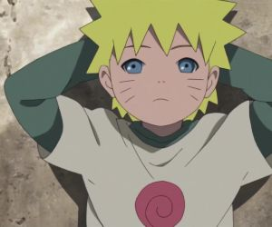
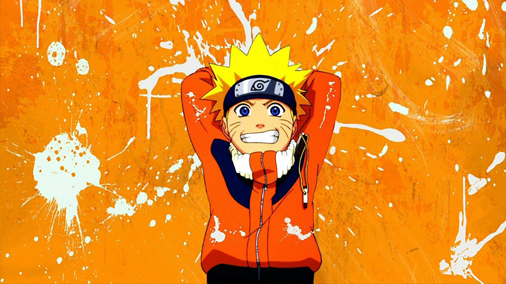
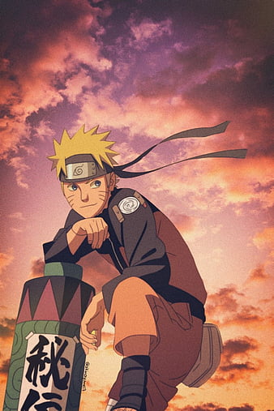
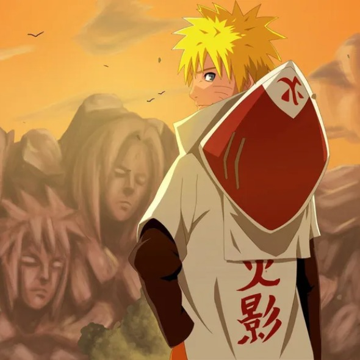

The Lonely Beginning
Born an orphan and shunned by the village, Naruto spent his earliest days sitting alone on a playground swing, bearing the heavy burden of the Nine-Tailed Fox without understanding why.

Born an orphan and shunned by the village, Naruto spent his earliest days sitting alone on a playground swing, bearing the heavy burden of the Nine-Tailed Fox without understanding why.

After finally passing the Academy exam and receiving his hidden leaf headband, Naruto joined Team 7 alongside Sasuke and Sakura. Under Kakashi's guidance, his unstoppable ninja way began to take shape.

Returning after years of intense training with Jiraiya, Naruto faced down ultimate threats like Akatsuki and Pain. By mastering Sage Mode and defending his home, he won the village's true respect.

Fulfilling the lifelong dream he loudly proclaimed to anyone who would listen, Naruto achieved the ultimate title, standing tall upon the Hokage Rock to protect the entire shinobi world as a true legend.